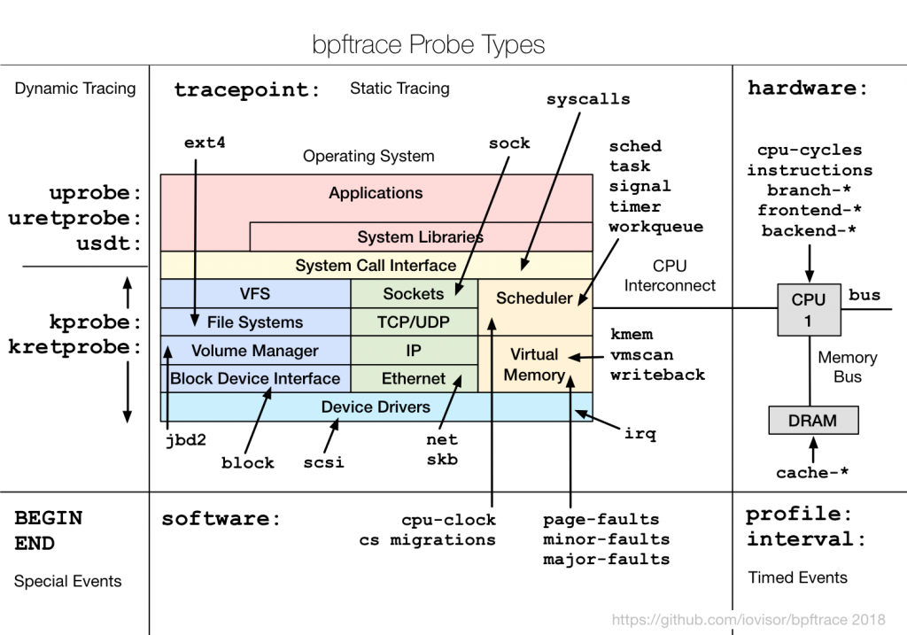

bpftrace 入門：認識 eBPF 的四種追蹤機制
bpftrace 是一個讓我們能快速實踐 eBPF 追蹤的工具。它本身是一種高階 eBPF 追蹤語言，具備以下特點：
- 語法簡潔，類似 Linux 上常見的
awk，容易上手 - 可即時執行，腳本會自動編譯成 eBPF bytecode，不需要手動編譯
- 支援多種追蹤機制，包含 Tracepoints、Kprobes、Uprobes、USDT
- 內建聚合函式，例如
count()、hist()、avg()等統計功能
如果不使用 bpftrace，又不想直接撰寫 bytecode，那麼以 C 搭配 libbpf 函式庫，也是常見的 eBPF 開發方式之一。相較之下，bpftrace 語法更精簡、開發速度更快，特別適合用於快速分析與除錯。本文也會以 bpftrace 作為 eBPF 操作範例。
安裝 bpftrace
詳細的環境需求與安裝步驟，可以參考 官方安裝文件。本文以 Ubuntu 24.04 作為示範環境：
sudo apt-get install -y bpftrace
安裝完成後，就可以先用最簡單的指令確認 bpftrace 是否正常運作：
sudo bpftrace -e 'BEGIN { printf("Hello, bpftrace!\n"); }'
執行後，會看到 probe 被動態掛載，並印出 Hello, bpftrace!：
Attaching 1 probe...
Hello, bpftrace!
bpftrace 語法參考
bpftrace 提供相當完整的語法與內建函式。若想進一步查詢特定語法，可參考：
此外，bpftrace 本身也提供實用的查詢指令：
# 查看所有可用的內建函式和變數
man bpftrace
# 列出所有 probe 類型
sudo bpftrace -l
# 查看特定 tracepoint 的參數
sudo bpftrace -lv tracepoint:syscalls:sys_enter_openat
eBPF 的四種追蹤機制
eBPF 提供多種追蹤機制，讓我們能依不同情境選擇合適的追蹤方式：

1. Kernel Tracepoint
Kernel Tracepoint 是核心開發者在程式碼中預先埋設的追蹤點。這些追蹤點允許 eBPF 程式掛載到特定的 kernel event，藉此捕獲相關資料，進行分析與監控。
我們也可以透過 bpftrace 找出核心中已存在的 tracepoint：
# 列出所有 tracepoints
sudo bpftrace -l 'tracepoint:*' | head
# 查看 syscalls 相關 tracepoints
sudo bpftrace -l 'tracepoint:syscalls:*' | head
2. USDT (User Statically Defined Tracing)
USDT 類似 Kernel Tracepoint，只是追蹤點是預先埋設在使用者空間程式中。例如 Python 就內建了一些 USDT probes，可用來追蹤函式呼叫、GC 事件等。
3. Kprobes (Kernel Probes)
即使核心內部函式沒有預先埋入 tracepoint，也可以透過 Kprobes，將 eBPF 動態掛載到幾乎任何 kernel 函式上。若要確認有哪些函式可被動態掛載，可執行：
sudo bpftrace -l 'kprobe:*tcp*' | head
這會列出可用於 Kprobes 追蹤的函式，例如：
kprobe:__arm64_sys_getcpu
kprobe:__bpf_tcp_ca_init
kprobe:__bpf_tcp_ca_release
kprobe:__mptcp_check_push
kprobe:__mptcp_clean_una
kprobe:__mptcp_close
kprobe:__mptcp_close_ssk
kprobe:__mptcp_data_acked
kprobe:__mptcp_destroy_sock
kprobe:__mptcp_error_report
例如，我們可以把 Kprobe 掛載到 kernel 內部的 tcp_connect 函式上，以觀察比 syscall 層更深入的網路行為：
sudo bpftrace -e '
kprobe:tcp_connect {
printf("%s (PID %d) initiated TCP connection\n", comm, pid);
}'
在另一個終端機使用 telnet 發起 TCP 連線後，eBPF 就能捕捉到相關資訊：
Attaching 1 probe...
telnet (PID 2976) initiated TCP connection
4. Uprobes (User Probes)
Uprobes 與 Kprobes 類似，差別在於 Kprobes 掛載在 kernel space 的函式上，而 Uprobes 掛載在 user space 的函式上。因此，我們可以使用 Uprobes 追蹤應用程式或函式庫。
常見的應用場景包括：
- 追蹤資料庫查詢
- 追蹤 OpenSSL 加密函式，以進行 SSL/TLS 監控
- 追蹤
malloc、free等函式，以進行記憶體分析
例如，我們可以使用 Uprobe 追蹤 Bash 的 readline 函式，觀察使用者輸入的完整指令：
sudo bpftrace -e '
uretprobe:/bin/bash:readline {
printf("Command: %s\n", str(retval));
}'
當使用者在另一個終端機輸入指令時，Uprobe 便能成功捕捉：
Attaching 1 probe...
Command: ls
Command: pwd
bpftrace 語法深入
基本語法結構
bpftrace 的程式結構類似 awk，由 probe 與 action 組成：
probe /filter/ {
action
}
- probe：指定掛載點（tracepoint、kprobe、uprobe 等）
- filter：可選的條件過濾，只有條件為真時才執行 action
- action：要執行的操作（列印、聚合、記錄等）
一個 bpftrace 程式可以包含多個 probe 區塊，還有兩個特殊 probe：
BEGIN {
// 程式開始時執行一次（初始化）
}
probe /filter/ {
// 每次事件觸發時執行
}
END {
// 程式結束時執行一次（清理、輸出統計）
}
變數系統
bpftrace 有三種變數：
// 1. 內建變數（唯讀，由系統提供）
pid, tid, comm, uid, nsecs, kstack, ustack, arg0, arg1, ...
// 2. Scratch 變數（以 $ 開頭，probe 內部的區域變數）
$latency = nsecs;
$filename = str(arg0);
// 3. Map 變數（以 @ 開頭，全域持久化，跨 probe 共享）
@start[pid] = nsecs; // 以 pid 為 key 儲存時間戳
@bytes = 0; // 全域計數器
@hist_latency = hist($latency); // 直方圖聚合
Map 變數是 bpftrace 最強大的功能之一，底層對應到 eBPF map，可以跨 probe 共享資料：
sudo bpftrace -e '
tracepoint:syscalls:sys_enter_read {
@start[tid] = nsecs;
}
tracepoint:syscalls:sys_exit_read / @start[tid] / {
$duration_us = (nsecs - @start[tid]) / 1000;
@read_latency_us = hist($duration_us);
delete(@start[tid]);
}
END {
clear(@start);
}'
過濾器（Filter）
過濾器用 / / 包裹，支援多種條件：
// 只追蹤特定 process
kprobe:vfs_read / comm == "nginx" / { ... }
// 只追蹤特定 PID
kprobe:vfs_read / pid == 1234 / { ... }
// 只追蹤特定 UID（非 root）
kprobe:vfs_read / uid != 0 / { ... }
// 組合條件
kprobe:vfs_read / comm == "nginx" && arg2 > 4096 / { ... }
// 只在 map 存在對應 key 時觸發
tracepoint:syscalls:sys_exit_read / @start[tid] / { ... }
聚合函式
bpftrace 內建豐富的聚合函式，適合做統計分析：
# count() — 計數
sudo bpftrace -e '
tracepoint:syscalls:sys_enter_* {
@syscall_count[probe] = count();
}'
# hist() — 以 2 的冪次為區間的直方圖
sudo bpftrace -e '
tracepoint:syscalls:sys_exit_read / retval > 0 / {
@read_size = hist(retval);
}'
# lhist() — 線性直方圖（自訂區間）
sudo bpftrace -e '
tracepoint:syscalls:sys_exit_read / retval > 0 / {
@read_size = lhist(retval, 0, 10000, 1000);
}'
# sum() — 加總
sudo bpftrace -e '
tracepoint:syscalls:sys_exit_read / retval > 0 / {
@total_bytes[comm] = sum(retval);
}'
# avg() / min() / max() — 平均值、最小值、最大值
sudo bpftrace -e '
tracepoint:syscalls:sys_exit_read / retval > 0 / {
@avg_read[comm] = avg(retval);
@max_read[comm] = max(retval);
}'
# stats() — 同時輸出 count, avg, total
sudo bpftrace -e '
tracepoint:syscalls:sys_exit_read / retval > 0 / {
@read_stats[comm] = stats(retval);
}'
字串與格式化輸出
// str() — 將指標轉為字串
printf("filename: %s\n", str(arg0));
// buf() — 讀取指定長度的 buffer
printf("data: %r\n", buf(arg0, 16));
// printf 支援常見格式化
printf("pid=%d comm=%s latency=%lld ns\n", pid, comm, $lat);
// 時間戳記
printf("%s %s\n", strftime("%H:%M:%S", nsecs), comm);
bpftrace 內建變數完整指南
Process 相關
| 變數 | 型別 | 說明 |
|---|---|---|
pid | uint64 | Process ID |
tid | uint64 | Thread ID |
uid | uint64 | User ID |
gid | uint64 | Group ID |
nsecs | uint64 | 當前時間戳（奈秒） |
elapsed | uint64 | 自 bpftrace 啟動以來的奈秒數 |
comm | string | Process 名稱（最長 16 字元） |
curtask | uint64 | 當前 task_struct 指標 |
cgroup | uint64 | 當前 cgroup ID |
cpu | uint32 | 當前 CPU 編號 |
Probe 相關
| 變數 | 型別 | 說明 |
|---|---|---|
probe | string | 當前 probe 的完整名稱 |
func | string | 被追蹤的函式名稱 |
arg0 ~ argN | uint64 | 函式的第 N 個參數 |
retval | uint64 | 函式的回傳值（僅 *retprobe 可用） |
args | struct | Tracepoint 的結構化參數 |
Stack 相關
| 變數 | 型別 | 說明 |
|---|---|---|
kstack | kstack | Kernel stack trace |
ustack | ustack | User space stack trace |
kstack(n) | kstack | 限制 kernel stack 深度為 n |
ustack(n) | ustack | 限制 user stack 深度為 n |
實用範例：用 stack trace 追蹤 kernel 記憶體配置
sudo bpftrace -e '
kprobe:__kmalloc {
@alloc_stacks[kstack, comm] = count();
}
END {
print(@alloc_stacks, 10);
}'
實用範例：用 ustack 追蹤應用程式的記憶體配置
sudo bpftrace -e '
uprobe:/lib/x86_64-linux-gnu/libc.so.6:malloc {
@malloc_stacks[ustack, comm] = count();
}' -c "ls"
實戰範例
範例一：系統呼叫統計 — 找出最繁忙的 syscall
sudo bpftrace -e '
tracepoint:raw_syscalls:sys_enter {
@syscalls[comm, args.id] = count();
}
interval:s:5 {
print(@syscalls, 20);
clear(@syscalls);
}'
搭配 syscall 編號對照表，找出哪些 process 發出最多系統呼叫。更直覺的做法：
# 直接列出每個 process 呼叫了哪些 syscall（以名稱顯示）
sudo bpftrace -e '
tracepoint:syscalls:sys_enter_* {
@[comm, probe] = count();
}'
輸出範例：
@[bash, tracepoint:syscalls:sys_enter_rt_sigprocmask]: 45
@[bash, tracepoint:syscalls:sys_enter_write]: 23
@[nginx, tracepoint:syscalls:sys_enter_epoll_wait]: 1502
@[nginx, tracepoint:syscalls:sys_enter_read]: 1489
@[nginx, tracepoint:syscalls:sys_enter_write]: 1401
範例二：檔案 I/O 追蹤 — 誰在讀寫哪些檔案
sudo bpftrace -e '
tracepoint:syscalls:sys_enter_openat {
printf("%-16s PID:%-6d %s\n", comm, pid, str(args.filename));
}'
更進階 — 追蹤 read/write 延遲與大小：
sudo bpftrace -e '
tracepoint:syscalls:sys_enter_read {
@start[tid] = nsecs;
@fd[tid] = args.fd;
}
tracepoint:syscalls:sys_exit_read / @start[tid] / {
$dur_us = (nsecs - @start[tid]) / 1000;
@read_latency_us[comm] = hist($dur_us);
@read_bytes[comm] = sum(retval > 0 ? retval : 0);
delete(@start[tid]);
delete(@fd[tid]);
}
END {
clear(@start);
clear(@fd);
}'
範例三：TCP 連線追蹤 — 觀察網路行為
sudo bpftrace -e '
kprobe:tcp_connect {
$sk = (struct sock *)arg0;
$daddr = ntop($sk->__sk_common.skc_daddr);
$dport = ($sk->__sk_common.skc_dport >> 8) |
(($sk->__sk_common.skc_dport & 0xff) << 8);
printf("%-16s PID:%-6d -> %s:%d\n", comm, pid, $daddr, $dport);
}'
範例四：追蹤 process 的生命週期
sudo bpftrace -e '
tracepoint:sched:sched_process_exec {
printf("[EXEC] %s PID:%-6d %s\n",
strftime("%H:%M:%S", nsecs), pid, str(args.filename));
}
tracepoint:sched:sched_process_exit {
printf("[EXIT] %s PID:%-6d %s\n",
strftime("%H:%M:%S", nsecs), pid, comm);
}'
範例五：追蹤 DNS 查詢
sudo bpftrace -e '
uprobe:/lib/x86_64-linux-gnu/libc.so.6:getaddrinfo {
printf("%-16s PID:%-6d DNS lookup: %s\n", comm, pid, str(arg0));
}'
USDT 實作範例
什麼是 USDT
USDT（User Statically Defined Tracing）是應用程式開發者在程式碼中預先埋設的追蹤點。與 Kprobes/Uprobes 不同，USDT 是靜態定義的，提供穩定的追蹤介面，不會因為程式碼重構而失效。
列出 USDT probes
# 列出 Python 的 USDT probes
sudo bpftrace -l 'usdt:/usr/bin/python3:*'
# 列出 Node.js 的 USDT probes
sudo bpftrace -l 'usdt:/usr/bin/node:*'
# 列出特定 PID 的 USDT probes（適用於動態語言執行中的 process）
sudo bpftrace -lp <PID>
範例：追蹤 Python 函式呼叫
Python 3 內建了 USDT probes（需要編譯時啟用 --with-dtrace，Ubuntu 預設已啟用）：
# 確認 Python 是否支援 USDT
sudo bpftrace -l 'usdt:/usr/bin/python3:*'
常見的 Python USDT probes：
usdt:/usr/bin/python3:python:function__entry
usdt:/usr/bin/python3:python:function__return
usdt:/usr/bin/python3:python:gc__start
usdt:/usr/bin/python3:python:gc__done
usdt:/usr/bin/python3:python:import__find__load__start
usdt:/usr/bin/python3:python:import__find__load__done
追蹤 Python 函式進出：
sudo bpftrace -e '
usdt:/usr/bin/python3:python:function__entry {
printf("[CALL] %s:%s:%d\n", str(arg0), str(arg1), arg2);
}
usdt:/usr/bin/python3:python:function__return {
printf("[RETURN] %s:%s:%d\n", str(arg0), str(arg1), arg2);
}' -p $(pgrep -f your_script.py)
其中 arg0 是檔案名稱、arg1 是函式名稱、arg2 是行號。
範例：追蹤 Python GC 事件
sudo bpftrace -e '
usdt:/usr/bin/python3:python:gc__start {
@gc_start = nsecs;
printf("GC started (generation %d)\n", arg0);
}
usdt:/usr/bin/python3:python:gc__done {
$dur_ms = (nsecs - @gc_start) / 1000000;
printf("GC finished: collected %lld objects in %lld ms\n", arg0, $dur_ms);
@gc_duration_ms = hist($dur_ms);
}' -p $(pgrep -f your_script.py)
範例：追蹤 Node.js HTTP 請求
Node.js 也支援 USDT probes（需使用 --enable-dtrace 編譯，或使用帶 USDT 支援的 Node.js 版本）：
sudo bpftrace -e '
usdt:/usr/bin/node:http:server:request {
printf("HTTP Request: %s %s\n", str(arg4), str(arg5));
}' -p $(pgrep node)
在 C 程式中自訂 USDT probes
使用 sys/sdt.h 標頭檔在自己的程式中埋設 USDT probes：
// my_app.c
#include <stdio.h>
#include <sys/sdt.h>
#include <unistd.h>
void process_request(int id, const char *data) {
DTRACE_PROBE2(my_app, request_start, id, data);
// 處理邏輯...
usleep(1000 * (id % 10));
DTRACE_PROBE1(my_app, request_end, id);
}
int main() {
for (int i = 0; i < 100; i++) {
process_request(i, "hello");
}
return 0;
}
編譯時需安裝 systemtap-sdt-dev：
sudo apt-get install -y systemtap-sdt-dev
gcc -o my_app my_app.c
追蹤自訂 probes：
# 列出程式的 USDT probes
sudo bpftrace -l 'usdt:./my_app:*'
# 追蹤 request 延遲
sudo bpftrace -e '
usdt:./my_app:my_app:request_start {
@start[arg0] = nsecs;
printf("Request %d started: %s\n", arg0, str(arg1));
}
usdt:./my_app:my_app:request_end / @start[arg0] / {
$dur_us = (nsecs - @start[arg0]) / 1000;
printf("Request %d finished in %d us\n", arg0, $dur_us);
@latency = hist($dur_us);
delete(@start[arg0]);
}' -c ./my_app
進階用法
One-liner 集錦
以下是實用的 bpftrace 一行腳本，可以直接複製使用：
# 1. 統計每秒的 syscall 數量
sudo bpftrace -e 'tracepoint:raw_syscalls:sys_enter { @[comm] = count(); }
interval:s:1 { print(@, 10); clear(@); }'
# 2. 追蹤所有 open 的檔案
sudo bpftrace -e 'tracepoint:syscalls:sys_enter_openat {
printf("%-16s %s\n", comm, str(args.filename)); }'
# 3. 統計 read 大小分佈
sudo bpftrace -e 'tracepoint:syscalls:sys_exit_read / retval > 0 / {
@size = hist(retval); }'
# 4. 追蹤 process 建立（含完整命令列）
sudo bpftrace -e 'tracepoint:syscalls:sys_enter_execve {
printf("%-6d %s", pid, str(args.filename));
join(args.argv); }'
# 5. 每秒統計 context switch 次數
sudo bpftrace -e 'tracepoint:sched:sched_switch { @[comm] = count(); }
interval:s:1 { print(@, 5); clear(@); }'
# 6. 追蹤 block I/O 延遲
sudo bpftrace -e 'tracepoint:block:block_rq_issue { @start[args.dev,
args.sector] = nsecs; }
tracepoint:block:block_rq_complete / @start[args.dev, args.sector] / {
@usecs = hist((nsecs - @start[args.dev, args.sector]) / 1000);
delete(@start[args.dev, args.sector]); }'
# 7. 統計每個 CPU 的使用率（基於排程器事件）
sudo bpftrace -e 'tracepoint:sched:sched_switch {
@cpu_usage[cpu, args.next_comm] = count(); }'
# 8. 追蹤 signal 發送
sudo bpftrace -e 'tracepoint:signal:signal_generate {
printf("%-16s (PID %d) sent signal %d to PID %d\n",
comm, pid, args.sig, args.pid); }'
# 9. 追蹤 page fault
sudo bpftrace -e 'software:page-faults:1 { @[comm, kstack(3)] = count(); }'
# 10. 追蹤 TCP 重傳
sudo bpftrace -e 'kprobe:tcp_retransmit_skb {
@retransmits[comm, pid] = count(); }'
腳本檔案寫法
對於較複雜的追蹤邏輯，建議寫成 .bt 腳本檔案：
#!/usr/bin/env bpftrace
// file_io_monitor.bt — 追蹤檔案 I/O 並統計延遲
BEGIN {
printf("Tracing file I/O... Hit Ctrl+C to stop.\n");
printf("%-8s %-16s %-6s %-4s %8s %s\n",
"TIME", "COMM", "PID", "TYPE", "LAT(us)", "FILE");
}
tracepoint:syscalls:sys_enter_openat {
@filename[tid] = args.filename;
}
tracepoint:syscalls:sys_enter_read,
tracepoint:syscalls:sys_enter_write {
@start[tid] = nsecs;
}
tracepoint:syscalls:sys_exit_read / @start[tid] / {
$dur = (nsecs - @start[tid]) / 1000;
printf("%-8s %-16s %-6d %-4s %8d\n",
strftime("%H:%M:%S", nsecs), comm, pid, "R", $dur);
@read_latency = hist($dur);
@read_bytes[comm] = sum(retval > 0 ? retval : 0);
delete(@start[tid]);
}
tracepoint:syscalls:sys_exit_write / @start[tid] / {
$dur = (nsecs - @start[tid]) / 1000;
printf("%-8s %-16s %-6d %-4s %8d\n",
strftime("%H:%M:%S", nsecs), comm, pid, "W", $dur);
@write_latency = hist($dur);
@write_bytes[comm] = sum(retval > 0 ? retval : 0);
delete(@start[tid]);
}
END {
printf("\n--- Read Latency (us) ---\n");
print(@read_latency);
printf("\n--- Write Latency (us) ---\n");
print(@write_latency);
printf("\n--- Read Bytes by Process ---\n");
print(@read_bytes, 10);
printf("\n--- Write Bytes by Process ---\n");
print(@write_bytes, 10);
clear(@start);
clear(@filename);
}
執行方式：
chmod +x file_io_monitor.bt
sudo ./file_io_monitor.bt
# 或
sudo bpftrace file_io_monitor.bt
Brendan Gregg 的 bpftrace 工具集
bpftrace 官方工具集 包含了 Brendan Gregg 等人開發的實用腳本，安裝 bpftrace 後通常會附帶這些工具：
# 常用工具一覽（通常安裝在 /usr/share/bpftrace/tools/）
ls /usr/share/bpftrace/tools/
# 熱門工具：
bashreadline.bt # 追蹤 bash 輸入的命令
biolatency.bt # Block I/O 延遲直方圖
biosnoop.bt # Block I/O 事件追蹤
capable.bt # 追蹤 security capability 檢查
cpuwalk.bt # 統計 process 在哪些 CPU 上執行
dcsnoop.bt # 追蹤 directory cache lookup
execsnoop.bt # 追蹤 process 執行（exec）
gethostlatency.bt # DNS 查詢延遲
killsnoop.bt # 追蹤 kill() 信號
oomkill.bt # 追蹤 OOM killer
opensnoop.bt # 追蹤 open() syscall
runqlat.bt # 排程器 run queue 延遲
statsnoop.bt # 追蹤 stat() syscall
syncsnoop.bt # 追蹤 sync() syscall
tcpaccept.bt # 追蹤 TCP accept
tcpconnect.bt # 追蹤 TCP connect
tcpdrop.bt # 追蹤 TCP 丟包
tcpretrans.bt # 追蹤 TCP 重傳
vfsstat.bt # VFS 操作統計
使用範例：
# Block I/O 延遲分析
sudo bpftrace /usr/share/bpftrace/tools/biolatency.bt
# 追蹤所有新建的 process
sudo bpftrace /usr/share/bpftrace/tools/execsnoop.bt
# 追蹤 TCP 連線建立
sudo bpftrace /usr/share/bpftrace/tools/tcpconnect.bt
搭配 -c 參數追蹤特定命令
# 追蹤 ls 命令的所有 syscall
sudo bpftrace -e '
tracepoint:raw_syscalls:sys_enter { @[comm] = count(); }
' -c "ls -la /tmp"
# 追蹤 curl 的 DNS 與 TCP 行為
sudo bpftrace -e '
uprobe:/lib/x86_64-linux-gnu/libc.so.6:getaddrinfo {
printf("DNS: %s\n", str(arg0));
}
kprobe:tcp_connect {
printf("TCP connect from %s PID %d\n", comm, pid);
}' -c "curl -s https://example.com -o /dev/null"
時間間隔觸發與定期輸出
# 每 3 秒輸出一次統計，追蹤 30 秒後自動結束
sudo timeout 30 bpftrace -e '
tracepoint:syscalls:sys_enter_read { @reads[comm] = count(); }
tracepoint:syscalls:sys_enter_write { @writes[comm] = count(); }
interval:s:3 {
printf("\n--- %s ---\n", strftime("%H:%M:%S", nsecs));
printf("Top Readers:\n");
print(@reads, 5);
printf("Top Writers:\n");
print(@writes, 5);
clear(@reads);
clear(@writes);
}'
效能分析場景
場景一：CPU Profiling — 找出 CPU 熱點
使用 profile probe 以固定頻率對所有 CPU 取樣 stack trace：
# 以 99 Hz 取樣（避免與 timer 同步），追蹤 10 秒
sudo bpftrace -e '
profile:hz:99 {
@cpu_stacks[kstack] = count();
}
interval:s:10 {
exit();
}
END {
print(@cpu_stacks, 25);
}'
若要以 Flame Graph 視覺化，可搭配 FlameGraph 工具：
# 輸出 folded stack format，再轉換為 flame graph
sudo bpftrace -e '
profile:hz:99 {
@[kstack] = count();
}
interval:s:30 { exit(); }
' | awk '/^@\[/{gsub(/\n/,";"); print}' > out.folded
# 或更簡單的做法：使用 bpftrace 的 -f 選項
sudo bpftrace -e 'profile:hz:99 { @[kstack] = count(); }
interval:s:30 { exit(); }' -f stacks > stacks.out
stackcollapse-bpftrace.pl < stacks.out | flamegraph.pl > flamegraph.svg
針對特定 process 的 user space profiling：
sudo bpftrace -e '
profile:hz:99 / pid == '$TARGET_PID' / {
@[ustack] = count();
}
interval:s:10 { exit(); }
'
場景二：記憶體分析 — 追蹤記憶體配置
# 追蹤 kernel 記憶體配置（kmalloc）
sudo bpftrace -e '
tracepoint:kmem:kmalloc {
@kmalloc_size = hist(args.bytes_alloc);
@kmalloc_by_caller[kstack(3)] = sum(args.bytes_alloc);
}'
追蹤 user space 的 malloc/free，偵測記憶體洩漏：
sudo bpftrace -e '
uprobe:/lib/x86_64-linux-gnu/libc.so.6:malloc {
@malloc_req[tid] = arg0;
}
uretprobe:/lib/x86_64-linux-gnu/libc.so.6:malloc / @malloc_req[tid] / {
@active[retval] = @malloc_req[tid];
@malloc_bytes[comm] = sum(@malloc_req[tid]);
@malloc_sizes = hist(@malloc_req[tid]);
delete(@malloc_req[tid]);
}
uprobe:/lib/x86_64-linux-gnu/libc.so.6:free / arg0 != 0 / {
delete(@active[arg0]);
}
END {
printf("\n=== Potentially leaked allocations ===\n");
print(@active, 20);
clear(@malloc_req);
}' -p $TARGET_PID
場景三：磁碟 I/O 延遲分析
sudo bpftrace -e '
tracepoint:block:block_rq_issue {
@io_start[args.dev, args.sector] = nsecs;
}
tracepoint:block:block_rq_complete / @io_start[args.dev, args.sector] / {
$dur_us = (nsecs - @io_start[args.dev, args.sector]) / 1000;
@io_latency_us = hist($dur_us);
@io_by_type[args.rwbs] = hist($dur_us);
if ($dur_us > 10000) {
printf("SLOW IO: %s dev=%d sector=%lld dur=%lld us\n",
args.rwbs, args.dev, args.sector, $dur_us);
}
delete(@io_start[args.dev, args.sector]);
}
END {
printf("\n=== Overall I/O Latency (us) ===\n");
print(@io_latency_us);
printf("\n=== I/O Latency by Type ===\n");
print(@io_by_type);
}'
場景四：排程器分析 — Run Queue 延遲
追蹤 process 從被喚醒到真正在 CPU 上執行的等待時間：
sudo bpftrace -e '
tracepoint:sched:sched_wakeup {
@qstart[args.pid] = nsecs;
}
tracepoint:sched:sched_switch {
$prev_pid = args.prev_pid;
$next_pid = args.next_pid;
if (@qstart[$next_pid]) {
$wait_us = (nsecs - @qstart[$next_pid]) / 1000;
@runq_latency_us = hist($wait_us);
@runq_by_proc[args.next_comm] = hist($wait_us);
if ($wait_us > 10000) {
printf("HIGH RUNQ LAT: %s PID:%d waited %lld us\n",
args.next_comm, $next_pid, $wait_us);
}
delete(@qstart[$next_pid]);
}
}
END {
printf("\n=== Run Queue Latency (us) ===\n");
print(@runq_latency_us);
clear(@qstart);
}'
場景五：Lock 競爭分析
追蹤 mutex lock 的等待時間，找出競爭最嚴重的鎖：
# 追蹤 kernel mutex 競爭
sudo bpftrace -e '
kprobe:mutex_lock {
@lock_start[tid] = nsecs;
@lock_addr[tid] = arg0;
}
kretprobe:mutex_lock / @lock_start[tid] / {
$wait_us = (nsecs - @lock_start[tid]) / 1000;
@lock_wait_us = hist($wait_us);
@lock_contention[@lock_addr[tid], kstack(5)] = sum($wait_us);
delete(@lock_start[tid]);
delete(@lock_addr[tid]);
}
END {
printf("\n=== Lock Wait Time (us) ===\n");
print(@lock_wait_us);
printf("\n=== Top Lock Contention Points ===\n");
print(@lock_contention, 10);
}'
場景六：網路延遲分析 — TCP 連線建立時間
sudo bpftrace -e '
kprobe:tcp_v4_connect {
@connect_start[tid] = nsecs;
}
kretprobe:tcp_v4_connect / @connect_start[tid] / {
$dur_us = (nsecs - @connect_start[tid]) / 1000;
@connect_latency = hist($dur_us);
@connect_by_proc[comm] = stats($dur_us);
delete(@connect_start[tid]);
}
kprobe:tcp_rcv_state_process {
$sk = (struct sock *)arg0;
$state = $sk->__sk_common.skc_state;
// TCP_ESTABLISHED = 1
if ($state == 1) {
@tcp_established[comm] = count();
}
}
END {
printf("\n=== TCP Connect Latency (us) ===\n");
print(@connect_latency);
printf("\n=== Connect Stats by Process (us) ===\n");
print(@connect_by_proc);
}'
與其他工具比較
工具定位概覽
┌──────────────────────────────────────────────────────────────────┐
│ Linux 追蹤工具光譜 │
│ │
│ 簡單/快速 複雜/強大 │
│ ◄─────────────────────────────────────────────────────────► │
│ │
│ perf top ftrace bpftrace BCC/libbpf SystemTap │
│ perf stat trace-cmd LTTng │
│ │
│ [計數/取樣] [kernel [腳本式 [C/Python [完整程式 │
│ 內建] eBPF] eBPF 開發] 語言追蹤] │
└──────────────────────────────────────────────────────────────────┘
詳細比較表
| 特性 | bpftrace | perf | ftrace | BCC | SystemTap |
|---|---|---|---|---|---|
| 學習曲線 | 低 | 低~中 | 中 | 中~高 | 高 |
| 語法 | AWK-like | 命令列選項 | 寫入虛擬檔案 | Python + C | 自有語言 |
| 底層機制 | eBPF | PMU + eBPF | kernel ftrace | eBPF | kprobes + 核心模組 |
| 適用場景 | 快速分析、原型驗證 | CPU profiling、PMU 事件 | kernel 函式追蹤 | 生產環境工具 | 複雜追蹤邏輯 |
| 安全性 | 高（eBPF verifier） | 高 | 高 | 高（eBPF verifier） | 中（載入核心模組） |
| overhead | 低 | 極低 | 低 | 低 | 中 |
| 可程式化 | 中（腳本） | 低 | 低 | 高（Python + C） | 高 |
| 生產環境 | 適合短期分析 | 非常適合 | 適合 | 非常適合 | 適合 |
| 需要核心標頭 | 否 | 否 | 否 | 是 | 是 |
| 輸出格式 | 文字、直方圖 | 文字、火焰圖 | 文字 | 自訂（Python） | 自訂 |
什麼時候用哪個工具？
選擇 bpftrace 的場景：
- 需要快速驗證假說（「這個函式被誰呼叫？」「這個 syscall 的延遲分佈？」）
- 一次性的探索式分析
- 想用最少的程式碼獲得追蹤結果
- 教學與學習 eBPF 概念
選擇 perf 的場景：
- CPU profiling 與 PMU（Performance Monitoring Unit）事件
- 需要極低 overhead 的取樣
- 硬體效能計數器（cache miss、branch misprediction）
- 已有成熟的 flame graph 工作流
# perf 典型用法
sudo perf record -g -p $PID -- sleep 10
sudo perf report
# 或產生火焰圖
sudo perf script | stackcollapse-perf.pl | flamegraph.pl > perf.svg
選擇 ftrace 的場景：
- 需要追蹤 kernel 內部函式呼叫鏈
- 不想安裝額外工具（ftrace 是核心內建）
- 開機早期階段的追蹤（eBPF 尚未初始化）
# ftrace 典型用法
echo function_graph > /sys/kernel/debug/tracing/current_tracer
echo tcp_sendmsg > /sys/kernel/debug/tracing/set_graph_function
cat /sys/kernel/debug/tracing/trace_pipe
選擇 BCC/libbpf 的場景：
- 需要建構長期運行的監控工具
- 需要複雜的資料處理邏輯（用 Python 後處理）
- 開發要打包部署的 eBPF 工具
- 需要更精細的 eBPF map 控制
# BCC 典型用法（Python）
from bcc import BPF
b = BPF(text="""
int kprobe__tcp_sendmsg(struct pt_regs *ctx) {
bpf_trace_printk("tcp_sendmsg called\\n");
return 0;
}
""")
b.trace_print()
選擇 SystemTap 的場景：
- 需要非常複雜的追蹤邏輯（類似完整程式語言）
- 已有 SystemTap 的腳本生態
- 在不支援 eBPF 的舊核心上追蹤（SystemTap 可在 3.x 核心上運行）
工具組合使用的典型流程
實際排查效能問題時，通常會組合使用多個工具：
效能排查典型流程
================
1. perf top / perf stat ← 快速定位熱點（哪個函式最忙？）
│
▼
2. bpftrace one-liner ← 驗證假說（這個函式的延遲分佈？）
│
▼
3. bpftrace 腳本 ← 深入分析（延遲來自哪個路徑？）
│
▼
4. perf record + flame graph ← 全局視角（整體 CPU 時間花在哪？）
│
▼
5. BCC/libbpf 工具 ← 持續監控（打包成生產環境工具）
實際範例 — 排查 Web Server 延遲問題：
# Step 1: perf stat 看整體概況
sudo perf stat -p $(pgrep nginx) -- sleep 10
# Step 2: bpftrace 看 syscall 延遲分佈
sudo bpftrace -e '
tracepoint:syscalls:sys_enter_read / comm == "nginx" / {
@start[tid] = nsecs;
}
tracepoint:syscalls:sys_exit_read / @start[tid] && comm == "nginx" / {
@us = hist((nsecs - @start[tid]) / 1000);
delete(@start[tid]);
}'
# Step 3: 發現 read 延遲高，進一步看是哪個 fd
sudo bpftrace -e '
tracepoint:syscalls:sys_enter_read / comm == "nginx" / {
@start[tid] = nsecs;
@fd[tid] = args.fd;
}
tracepoint:syscalls:sys_exit_read / @start[tid] && comm == "nginx" / {
$us = (nsecs - @start[tid]) / 1000;
if ($us > 1000) {
printf("SLOW: fd=%d lat=%lld us bytes=%lld\n",
@fd[tid], $us, retval);
}
delete(@start[tid]);
delete(@fd[tid]);
}'
# Step 4: perf record 產生火焰圖做全局分析
sudo perf record -g -p $(pgrep nginx) -- sleep 30
sudo perf script | stackcollapse-perf.pl | flamegraph.pl > nginx.svg
實戰：用 bpftrace + nm 追蹤 Go Runtime 啟動流程
一個簡單的 Go 程式 fmt.Println("Hello, World!") 背後，Go runtime 究竟做了多少事？本節透過 nm（符號表工具）和 bpftrace（uprobe 動態追蹤）完整揭露 Go 程式從進入點到 main.main 的每一步。
準備工作
步驟 1：建立測試程式
// hello.go
package main
import "fmt"
func main() {
fmt.Println("Hello, World!")
}
步驟 2：編譯（兩個版本）
# 版本 1：預設編譯
go build -o hello hello.go
# 版本 2：禁止內聯（讓所有函數都出現在符號表中，追蹤更完整）
go build -gcflags='-l' -o hello_noinline hello.go
為什麼需要禁止內聯？ Go 編譯器預設會將小函數內聯（inline），這些函數在執行時不會產生獨立的函數呼叫，bpftrace 的 uprobe 就追蹤不到。禁止內聯後，所有函數都保留獨立的入口點，追蹤結果更完整。
兩個版本的比較：
| 指標 | hello（預設） | hello_noinline（禁止內聯） |
|---|---|---|
| 檔案大小 | 2.2M | 2.2M |
| Text 符號總數 | 1761 | 1762 |
| runtime 符號數 | 1317 | 1317 |
步驟 3：用 nm 觀察符號表
nm 是 GNU Binutils 中的工具，用來列出目標檔案或可執行檔中的符號。符號類型 T 表示位於 text section（程式碼段）的全域函數。
# 列出所有 text section 的 runtime 符號（前 20 個）
$ nm hello_noinline | grep ' T ' | grep 'runtime\.' | head -20
000000000046da40 T runtime.abort.abi0
0000000000445400 T runtime.acquirep
00000000004396a0 T runtime.acquireSudog
0000000000424de0 T runtime.(*activeSweep).end
000000000043dbc0 T runtime.addExtraM
000000000042a220 T runtime.addfinalizer
0000000000431100 T runtime.(*addrRanges).add
0000000000431640 T runtime.(*addrRanges).cloneInto
0000000000431000 T runtime.(*addrRanges).findAddrGreaterEqual
0000000000430f20 T runtime.(*addrRanges).findSucc
0000000000430e80 T runtime.(*addrRanges).init
0000000000430da0 T runtime.addrRange.subtract
0000000000429e00 T runtime.addspecial
000000000044f600 T runtime.adjustctxt
000000000044f640 T runtime.adjustdefers
000000000044f3e0 T runtime.adjustframe
000000000044f1e0 T runtime.adjustpointers
000000000044c960 T runtime.adjustSignalStack
000000000044cbe0 T runtime.adjustSignalStack2
0000000000409920 T runtime.alginit
統計各 package 的符號數量：
$ nm hello_noinline | grep ' T ' | awk '{print $3}' | sed 's/\..*//' | sort | uniq -c | sort -rn | head -15
1288 runtime
78 type:
75 reflect
40 fmt
29 internal/poll
28 strconv
28 internal/runtime/maps
25 syscall
25 sync
18 os
18 internal/sync
17 internal/godebug
11 internal/abi
10 internal/reflectlite
8 sync/atomic
一個 Hello World 程式，光 runtime 就有 1288 個函數，其次是 reflect（75）、fmt（40）等。Go 二進位檔是靜態連結的，包含了完整的 runtime 和所有依賴的標準庫。
步驟 4：用 bpftrace 追蹤 runtime 啟動流程
使用 uprobe 動態掛載到 Go 二進位檔中的所有函數，記錄首次呼叫的順序：
#!/usr/bin/env bpftrace
// trace_go_runtime.bt — 追蹤 Go 程式的 runtime 啟動流程（去重）
BEGIN
{
printf("Tracing Go runtime functions (unique, ordered)...\n");
printf("%-6s %-15s %s\n", "ORDER", "TIME(us)", "FUNCTION");
@order = 0;
}
uprobe:./hello_noinline:*
{
if (@seen[func] == 0) {
@seen[func] = 1;
@order++;
printf("%-6d %-15lu %s\n", @order, elapsed / 1000, func);
}
}
END
{
printf("\n--- Total unique functions called: %d ---\n", @order);
clear(@seen);
}
執行追蹤：
$ sudo bpftrace trace_go_runtime.bt -c ./hello_noinline
進階：顯示函數的原始檔名與行號
bpftrace 的 func 變數只能取得函數名稱，無法直接從 DWARF 除錯資訊中取得原始檔名與行號。解決方案是利用 go tool objdump 預先建立函數名稱 → 原始檔名:行號的對照表，再與 bpftrace 的輸出合併。
步驟 1：建立函數對照表
# 從 Go 二進位檔的 DWARF 資訊萃取每個函數的定義位置
go tool objdump ./hello_noinline | awk '
/^TEXT / {
match($0, /TEXT ([^ ]+)\(SB\) (.*)/, a)
func_name = a[1]
file_path = a[2]
want_line = 1
next
}
want_line && /^ / {
split($1, parts, ":")
line_num = parts[length(parts)]
n = split(file_path, fp, "/")
print func_name "\t" fp[n] ":" line_num
want_line = 0
}
' > /tmp/go_func_map.txt
產出範例：
internal/abi.NoEscape escape.go:21
internal/cpu.Initialize cpu.go:152
runtime.check runtime1.go:142
runtime.args runtime1.go:66
main.main hello.go:7
fmt.Println print.go:313
步驟 2：結合 bpftrace 輸出與檔名行號
將 bpftrace 的追蹤結果與對照表合併，使每一行輸出同時顯示函數名稱與定義位置：
# 執行 bpftrace 並即時合併檔名/行號資訊
sudo bpftrace trace_go_runtime.bt -c ./hello_noinline 2>/dev/null | awk '
BEGIN {
# 載入函數對照表
while ((getline line < "/tmp/go_func_map.txt") > 0) {
split(line, a, "\t")
gsub(/^ +| +$/, "", a[1])
gsub(/^ +| +$/, "", a[2])
loc[a[1]] = a[2]
}
}
/^[0-9]/ {
# 輸出格式: ORDER TIME FUNCTION FILE:LINE
func_name = $3
file_info = (func_name in loc) ? loc[func_name] : "?"
printf "%-6s %-15s %-50s %s\n", $1, $2, func_name, file_info
next
}
{ print }
'
輸出範例（包含原始檔名與行號）：
Tracing Go runtime functions (unique, ordered)...
ORDER TIME(us) FUNCTION FILE:LINE
1 22927 _rt0_amd64_linux rt0_linux_amd64.s:8
2 22933 _rt0_amd64 asm_amd64.s:16
3 22941 runtime.rt0_go.abi0 asm_amd64.s:161
4 22946 runtime.settls.abi0 sys_linux_amd64.s:637
5 22949 runtime.check.abi0 <autogenerated>:1
6 22951 runtime.check runtime1.go:142
7 22954 runtime.testAtomic64 runtime1.go:105
8 22956 runtime.checkASM.abi0 asm_amd64.s:1638
...
450 30473 main.main hello.go:7
451 30478 fmt.Println print.go:313
輸出解讀：這真的是程式的實際執行順序嗎？
是的。 上面印出的順序就是程式實際運行時函數的呼叫順序，而非靜態分析的猜測結果。
為什麼是真實順序： bpftrace 使用 uprobe 機制，在 kernel 層級動態攔截函數呼叫。當程式執行到某個函數的入口地址時，CPU 觸發斷點，kernel 通知 bpftrace 記錄事件。因此：
elapsed / 1000是真實的微秒級時間戳- 順序編號反映的是該函數第一次被呼叫的先後順序（
@seenmap 負責去重） - 整個追蹤過程不需要修改原始程式碼，也不需要重新編譯
需要注意的限制：
| 限制 | 說明 |
|---|---|
| 只記錄首次呼叫 | 腳本用 @seen[func] 去重，同一個函數被呼叫多次只顯示第一次。實際上 runtime.mallocgc、runtime.newobject 等函數會被呼叫成百上千次 |
| Inline 函數不可見 | 被 Go 編譯器 inline 的函數不會出現——函數體被嵌入到 caller 中，原始符號地址不會被執行到。這就是為什麼需要用 -gcflags='-l' 禁用 inline 編譯出 hello_noinline，才能看到完整的 496 個函數 |
| FILE:LINE 是定義位置 | 合併的檔名行號來自 go tool objdump 萃取的 DWARF 資訊，顯示的是函數定義在原始碼的哪個位置，而不是「從哪裡被呼叫的」呼叫點 |
| 多執行緒交錯 | Go runtime 會啟動多個 OS thread（M），例如 sysmon 監控執行緒。輸出後半段可能出現不同 thread 的函數交錯出現，這也是真實的並行執行順序 |
總結：一個 Go Hello World 程式從 ELF 入口點
_rt0_amd64_linux開始，經過 450 個 runtime 初始化函數，最後才到達main.main。這份輸出完整呈現了從組合語言入口 → runtime 初始化 → 標準庫初始化 → 使用者程式碼的真實執行路徑。
一鍵腳本：trace_go_with_source.sh
將上述流程整合成一個腳本，方便重複使用：
#!/bin/bash
# trace_go_with_source.sh — 追蹤 Go runtime 並顯示原始碼位置
# 用法: sudo ./trace_go_with_source.sh <go_binary>
BINARY="${1:?用法: $0 <go_binary>}"
MAP_FILE=$(mktemp /tmp/go_func_map.XXXXXX)
echo "=== 建立函數對照表 ==="
go tool objdump "$BINARY" | awk '
/^TEXT / {
match($0, /TEXT ([^ ]+)\(SB\) (.*)/, a)
func_name = a[1]
file_path = a[2]
want_line = 1
next
}
want_line && /^ / {
split($1, parts, ":")
line_num = parts[length(parts)]
n = split(file_path, fp, "/")
print func_name "\t" fp[n] ":" line_num
want_line = 0
}
' > "$MAP_FILE"
echo "對照表已建立：$(wc -l < "$MAP_FILE") 個函數"
echo ""
echo "=== 開始追蹤 ==="
sudo bpftrace -e '
BEGIN {
printf("%-6s %-15s %s\n", "ORDER", "TIME(us)", "FUNCTION");
@order = 0;
}
uprobe:'"$BINARY"':* {
if (@seen[func] == 0) {
@seen[func] = 1;
@order++;
printf("%-6d %-15lu %s\n", @order, elapsed / 1000, func);
}
}
END {
printf("\n--- Total unique functions called: %d ---\n", @order);
clear(@seen);
}
' -c "$BINARY" 2>/dev/null | awk -v mapfile="$MAP_FILE" '
BEGIN {
while ((getline line < mapfile) > 0) {
split(line, a, "\t")
gsub(/^ +| +$/, "", a[1])
gsub(/^ +| +$/, "", a[2])
loc[a[1]] = a[2]
}
printf "%-6s %-15s %-50s %s\n", "ORDER", "TIME(us)", "FUNCTION", "SOURCE"
printf "%-6s %-15s %-50s %s\n", "-----", "--------", "--------", "------"
}
/^ORDER/ { next }
/^[0-9]/ {
func_name = $3
file_info = (func_name in loc) ? loc[func_name] : "-"
printf "%-6s %-15s %-50s %s\n", $1, $2, func_name, file_info
next
}
/^---/ { print; next }
/^$/ { next }
'
rm -f "$MAP_FILE"
原理說明：
go tool objdump利用 Go 二進位檔中的 DWARF 除錯資訊，能精確對應每個函數到原始碼的檔名與行號。一般的addr2line對 Go 的支援不佳（常回傳?），因此使用 Go 自帶的工具鏈更為可靠。如果二進位是用go build -ldflags="-s -w"編譯的（移除了 DWARF 資訊），則無法取得檔名與行號。
補充：ELF 與 DWARF 的關係
在 Linux 上追蹤程式時，經常會碰到 ELF 和 DWARF 這兩個名詞。它們扮演完全不同的角色，但經常被混淆。
ELF — 執行檔的「容器格式」
ELF（Executable and Linkable Format）是 Linux 上二進位檔的標準格式，定義了檔案如何被作業系統載入和執行。可以把 ELF 想成一個「集裝箱」，裡面裝著程式運行所需的一切：
┌─────────────────────────────────────────────┐
│ ELF 檔案 │
├─────────────────────────────────────────────┤
│ ELF Header 檔案類型、目標架構、入口點 │
├─────────────────────────────────────────────┤
│ .text 機器碼（程式的指令） │
│ .rodata 唯讀資料（字串常量等） │
│ .data 已初始化的全域變數 │
│ .bss 未初始化的全域變數 │
│ .symtab 符號表（函數名 → 位址） │
│ .strtab 字串表 │
├─────────────────────────────────────────────┤
│ .debug_info ← DWARF 除錯資訊 │
│ .debug_line ← DWARF 行號對照表 │
│ .debug_abbrev ← DWARF 縮寫表 │
│ ... ← 其他 DWARF sections │
└─────────────────────────────────────────────┘
ELF 的核心職責：
- 告訴 kernel 如何將程式載入記憶體（哪些段放在哪裡）
- 提供動態連結器需要的重定位資訊
- 存放符號表（
nm讀取的就是這裡的.symtab）
DWARF — 除錯用的「元資料」
DWARF 是一種除錯資訊格式，嵌入在 ELF 檔案中，專門為 debugger（如 GDB）和分析工具提供原始碼級別的對應關係。
名稱由來：DWARF 原本不是縮寫，純粹是為了和 ELF（精靈）配對而取的奇幻文學雙關——矮人（dwarf）。後來社群才「反推」出 "Debugging With Attributed Record Formats" 這個 backronym（先有名字再湊縮寫），但 DWARF 標準委員會在官方規格書中明確指出："The name DWARF is not an acronym." 目前最新版本是 DWARF 5（2017 年發布）。
DWARF 回答的問題是：「機器碼的這個位址，對應到原始碼的哪一行？」
DWARF 提供的資訊：
機器碼位址 0x491b40 → hello.go 第 7 行, main.main 函數
機器碼位址 0x491b4e → hello.go 第 8 行
機器碼位址 0x491b78 → hello.go 第 9 行
變數 "message" → 型別 string, 存放在 stack offset -24
函數 "main.main" → 參數 0 個, 回傳值 0 個
DWARF 由多個 section 組成，每個負責不同類型的資訊：
| Section | 用途 | 誰會讀取 |
|---|---|---|
.debug_info | 型別、變數、函數的完整描述 | GDB, Delve |
.debug_line | 機器碼位址 ↔ 原始碼行號的對照表 | addr2line, objdump |
.debug_frame | Stack unwinding 資訊（call stack 回溯） | GDB, perf |
.debug_abbrev | .debug_info 的壓縮編碼表 | 所有 DWARF 讀取器 |
.debug_str | 共用的字串池（檔名、變數名等） | 所有 DWARF 讀取器 |
.debug_ranges | 非連續位址範圍的描述 | GDB |
一張圖看懂兩者的關係
編譯器 (go build / gcc)
│
┌────────────┼────────────┐
▼ ▼ ▼
原始碼 機器碼 除錯資訊
(hello.go) (指令) (行號、型別)
│ │ │
│ ┌─────┴─────┐ │
│ │ ELF │ │
│ │ 容器格式 │ │
│ ├───────────┤ │
│ │ .text │◄─────┘ 機器碼
│ │ .symtab │ 符號表（函數名→位址）
│ │ .data │ 資料段
│ ├───────────┤
└─────►│ .debug_* │ DWARF（原始碼→機器碼對照）
└───────────┘
│
┌────────────┼────────────┐
▼ ▼ ▼
nm / objdump GDB / Delve bpftrace / perf
讀 .symtab 讀 DWARF 讀 .symtab
(函數名) (行號+變數) (掛 probe)
實際觀察：用 readelf 檢視 ELF 與 DWARF
# 查看 ELF 的所有 section（包含 DWARF）
$ readelf -S hello_noinline | grep -E "debug|text|symtab"
[ 1] .text PROGBITS 0000000000401000 00001000
[13] .debug_abbrev PROGBITS 0000000000000000 00162000
[14] .debug_line PROGBITS 0000000000000000 00162157
[15] .debug_frame PROGBITS 0000000000000000 0018651a
[17] .debug_info PROGBITS 0000000000000000 0018d51e
[18] .debug_loc PROGBITS 0000000000000000 001d4d8b
[19] .debug_ranges PROGBITS 0000000000000000 001f6a02
[23] .symtab SYMTAB 0000000000000000 00203e80
# 查看 DWARF 行號表（位址 → 原始碼行號對照）
$ readelf --debug-dump=decodedline hello_noinline | grep "hello.go"
hello.go 7 0x491b40
hello.go 7 0x491b4a
hello.go 8 0x491b4e
hello.go 8 0x491b55
hello.go 9 0x491b78
# 查看各 section 大小（DWARF 佔了不少空間）
$ size --format=sysv hello_noinline | grep -E "debug|\.text|Total"
.text 592849 4198400
.debug_abbrev 343 0
.debug_line 148419 0
.debug_frame 28565 0
.debug_info 292973 0
.debug_loc 138359 0
.debug_ranges 54395 0
Total 2249936
可以看到 DWARF 的 .debug_* sections 合計約 663 KB，佔整個二進位檔的 29%。其中 .debug_info 最大（293 KB），存放了所有型別和函數的完整描述。
關鍵差異總結
| 面向 | ELF | DWARF |
|---|---|---|
| 是什麼 | 二進位檔的容器格式 | 除錯資訊的資料格式 |
| 關係 | 外層容器 | 嵌入在 ELF 內的 sections |
| 必要性 | 執行程式必須有 | 可選，移除後程式仍能運行 |
| 提供的資訊 | 機器碼、符號表、資料段 | 原始碼行號、變數型別、call frame |
| 讀取工具 | readelf, nm, objdump | readelf --debug-dump, addr2line, GDB |
| bpftrace 用到 | .symtab（掛 uprobe 用函數名定位位址） | 不直接使用（需外部工具解析） |
| 移除方式 | 無法移除（移除就不是合法執行檔了） | strip 或 go build -ldflags="-s -w" |
對追蹤工具的影響
有 DWARF 無 DWARF
(go build) (go build -ldflags="-s -w")
┌──────────────┐ ┌──────────────┐
bpftrace uprobe │ ✅ 正常運作 │ │ ✅ 正常運作 │ ← 只需 .symtab
nm (符號表) │ ✅ 函數名 │ │ ✅ 函數名 │ ← 只需 .symtab
go tool objdump │ ✅ 檔名+行號 │ │ ❌ 無法解析 │ ← 需要 DWARF
GDB 設斷點 │ ✅ 原始碼對應 │ │ ⚠️ 只能用位址 │ ← 需要 DWARF
perf record │ ✅ 完整 stack │ │ ⚠️ 部分 stack │ ← frame info
檔案大小 │ 較大（+30~50%）│ │ 較小 │
└──────────────┘ └──────────────┘
實務建議：開發和除錯時保留 DWARF（預設行為），正式部署時可用
go build -ldflags="-s -w"移除以縮小二進位檔。但如果需要在生產環境進行 bpftrace 追蹤並想看到原始碼位置，就需要另外保存一份含 DWARF 的二進位檔，搭配本節的對照表方法使用。
完整追蹤結果與分析
以下是實際追蹤到的 496 個不重複函數，按照執行時間順序排列，劃分為 12 個階段：
階段 1：程式進入點 (#1-#2)
# TIME(us) FUNCTION
1 22927 _rt0_amd64_linux ← Linux/amd64 入口
2 22933 _rt0_amd64 ← 跳到通用 amd64 入口
這是 Go 程式在 Linux 上的真正入口。ELF 的 entry point 指向 _rt0_amd64_linux，它設定好 stack 後跳到 _rt0_amd64。
階段 2：硬體與環境檢查 (#3-#8)
3 22941 runtime.rt0_go.abi0 ← 核心啟動函數（彙編）
4 22946 runtime.settls.abi0 ← 設定 Thread Local Storage
5 22949 runtime.check.abi0 ← runtime 自我檢查
6 22951 runtime.check ← 檢查型別大小、原子操作
7 22954 runtime.testAtomic64 ← 測試 64-bit 原子操作
8 22956 runtime.checkASM.abi0 ← 檢查彙編常數正確性
rt0_go 是 Go 啟動的核心彙編函數，它依序完成：設定 TLS → 自我檢查 → 初始化 → 建立 main goroutine → 啟動排程。
階段 3：系統資訊收集 (#9-#33)
9 22958 runtime.args.abi0 ← 保存命令列參數
10 22959 runtime.args
11 22961 runtime.sysargs ← 解析 auxiliary vector
12 22963 runtime.sysauxv ← 讀取 Linux aux vector
13 22965 runtime.vdsoauxv ← 找 vDSO 位址
14 22967 runtime.vdsoInitFromSysinfoEhdr ← 初始化 vDSO
15 22973 runtime.vdsoFindVersion ← 找 vDSO 版本
16 22978 runtime.findnull ← 字串操作
17 22979 internal/bytealg.IndexByteString.abi0
18 22981 indexbytebody
19 22983 runtime.memequal
20 22985 memeqbody
21 22989 runtime.vdsoParseSymbols ← 解析 vDSO 符號表
22 22991 runtime.vdsoParseSymbols.func1
什麼是 vDSO？ Virtual Dynamic Shared Object 是 kernel 映射到 user space 的特殊記憶體區域，讓 gettimeofday() 等頻繁使用的系統呼叫不需要 context switch，直接在 user space 執行。Go runtime 啟動時就解析 vDSO，之後 nanotime() 等函數直接走 vDSO 快速路徑。
階段 4：OS 初始化 (#23-#33)
23 23053 runtime.osinit.abi0 ← OS 層初始化
24 23054 runtime.osinit
25 23057 runtime.getproccount ← 取得 CPU 核心數
26 23065 runtime.sched_getaffinity.abi0 ← syscall
27 23068 runtime.getHugePageSize ← 讀取 huge page 大小
28 23070 runtime.open.abi0 ← 讀 /sys/kernel/mm/transparent_hugepage
29 23084 runtime.read.abi0
30 23090 runtime.closefd.abi0
31 23095 runtime.atoi64 ← 解析數字
32 23097 runtime.vgetrandomInit ← 初始化隨機數
33 23099 runtime.vgetrandom1 ← 取得隨機種子
Go runtime 需要知道：有幾個 CPU → 決定 P 的數量；hugepage 大小 → 決定記憶體分配策略；隨機數 → 初始化 hash seed 防止 hash DoS。
階段 5：排程器初始化 schedinit (#34-#67)
34 23102 runtime.schedinit.abi0 ← 排程器初始化入口
35 23104 runtime.schedinit ← 排程器初始化
36 23106 runtime.traceLockInit ← 追蹤鎖初始化
37 23108 runtime.lockVerifyMSize
38 23110 runtime.(*ticksType).init ← 高精度時鐘
39 23112 runtime.lock2 ← 內部鎖
40 23114 runtime.nanotime1.abi0 ← 取當前時間
41 23124 runtime.cputicks.abi0 ← CPU tick 計數器
42 23126 runtime.unlock2
43 23128 runtime.(*mLockProfile).recordUnlock
44 23131 runtime.moduledataverify1 ← 驗證模組資料
45 23140 runtime.(*moduledata).textAddr
schedinit() 是 Go runtime 初始化的心臟，它依序完成：鎖初始化 → 模組驗證 → 記憶體分配器初始化 → 排程器設定。
階段 6：記憶體分配器初始化 mallocinit (#46-#67)
46 23144 runtime.mallocinit ← 記憶體分配器初始化
47 23146 runtime.(*mheap).init ← heap 初始化
48 23149 runtime.(*fixalloc).init ← 固定大小分配器（×9 個）
49 23174 runtime.(*pageAlloc).init ← 頁面分配器
50 23176 runtime.(*addrRanges).init ← 位址範圍管理
51 23178 runtime.persistentalloc ← 永久記憶體分配
52 23179 runtime.systemstack.abi0 ← 切換到系統棧
53 23180 runtime.persistentalloc.func1
54 23182 runtime.persistentalloc1
55 23186 runtime.sysAlloc ← 向 OS 申請記憶體
56 23187 runtime.(*sysMemStat).add ← 記憶體統計
57 23190 runtime.sysAllocOS
58 23191 runtime.mmap ← 底層 mmap 系統呼叫
59 23192 runtime.sysMmap.abi0
60 23203 runtime.(*pageAlloc).sysInit
61 23206 runtime.sysReserve ← 預留虛擬位址空間
62 23238 runtime.(*scavengeIndex).init ← 記憶體回收索引
63 23240 runtime.(*scavengeIndex).sysInit
64 23247 runtime.allocmcache ← 分配 mcache（per-P 快取）
65 23250 runtime.allocmcache.func1
66 23253 runtime.(*fixalloc).alloc ← 固定大小記憶體分配
67 23273 runtime.fastexprand ← 隨機指數分佈
Go 的記憶體分配器是三層架構，此時正在建立基礎設施：
┌──────────────────────────────────────────────┐
│ mcache (per-P) ← 無鎖，每個 P 一份快取 │
├──────────────────────────────────────────────┤
│ mcentral ← 全域 span 管理，需要鎖 │
├──────────────────────────────────────────────┤
│ mheap ← 向 OS 申請記憶體 (mmap) │
└──────────────────────────────────────────────┘
階段 7：CPU 偵測 & 隨機數初始化 (#68-#152)
68 23491 runtime.getGodebugEarly ← 讀 GODEBUG 環境變數
69 23565 internal/cpu.Initialize ← CPU 特性偵測
70 23567 internal/cpu.doinit
...
138 24164 internal/cpu.cpuid.abi0 ← 執行 CPUID 指令
139 24172 internal/cpu.xgetbv.abi0 ← 讀 XCR0（AVX 支援）
140 24180 internal/cpu.processOptions
141 24183 runtime.randinit ← 隨機數初始化
142 24187 internal/chacha8rand.(*State).Init ← ChaCha8 PRNG
143 24189 internal/chacha8rand.block
144 24197 runtime.alginit ← hash 演算法初始化
145 24200 runtime.bootstrapRand
Go 會使用 CPUID 指令偵測 CPU 支援的指令集（SSE、AVX 等），用來選擇最佳的 hash、memcpy 實作。隨機數使用 ChaCha8 演算法。
階段 8：M/G 建立 & Processor 初始化 (#146-#221)
146 24306 runtime.mcommoninit ← 初始化 M（系統線程）
147 24311 runtime.mReserveID ← 分配 M 的 ID
148 24313 runtime.checkmcount ← 檢查 M 數量限制
149 24315 runtime.mrandinit ← M 的隨機數
153 24358 runtime.malg ← 建立 G（goroutine）
154 24370 runtime.malg.func1
155 24372 runtime.stackalloc ← 分配 goroutine 棧
156 24379 runtime.(*mheap).allocManual ← 手動記憶體分配
158 24441 runtime.modulesinit ← 模組初始化
162 24698 runtime.typelinksinit ← 型別連結初始化
163 24701 runtime.itabsinit ← interface table 初始化
164 24706 runtime.itabAdd
165 24708 runtime.(*itabTableType).add
168 24768 runtime.goargs ← Go 層參數處理
170 24875 runtime.goenvs_unix ← 環境變數處理
176 25584 runtime.parsedebugvars ← 解析 GODEBUG
180 25616 runtime.mapaccess1_faststr ← map 操作
182 25754 runtime.gcinit ← GC 初始化
185 25795 runtime.(*gcControllerState).init ← GC 控制器
189 25993 runtime.procresize ← 建立 P 陣列
192 26133 runtime.(*p).init ← 初始化每個 P
193 26137 runtime.(*wbBuf).reset ← 寫屏障 buffer
198 27442 runtime.acquirep ← M 綁定 P
199 27446 runtime.wirep
此階段建立 GMP 排程模型的基礎：
┌────────┐ ┌────────┐ ┌────────┐
│ G │ │ G │ │ G │
│goroutine│ │goroutine│ │goroutine│
└───┬────┘ └───┬────┘ └───┬────┘
│ │ │
┌───▼────┐ ┌───▼────┐ ┌───▼────┐
│ P │ │ P │ │ P │
│processor│ │processor│ │processor│
│(runqueue)│ │(runqueue)│ │(runqueue)│
└───┬────┘ └───┬────┘ └───┬────┘
│ │ │
┌───▼────┐ ┌───▼────┐
│ M │ │ M │
│ thread │ │ thread │
└────────┘ └────────┘
階段 9：建立 main goroutine & 啟動排程 (#208-#249)
208 27872 runtime.newproc.abi0 ← 建立新 goroutine
209 27873 runtime.newproc ← （runtime.main）
210 27874 runtime.newproc.func1
211 27875 runtime.newproc1 ← goroutine 建立核心邏輯
212 27876 runtime.gfget ← 嘗試取得空閒 G
213 27884 runtime.stackcacherefill ← 補充棧快取
215 27910 runtime.casgstatus ← 設定 G 狀態
216 27911 runtime.allgadd ← 加入全域 G 列表
221 27945 runtime.runqput ← 放入 P 的本地隊列
222 27946 runtime.mstart.abi0 ← 啟動 M
223 27947 runtime.mstart0.abi0
224 27948 runtime.mstart0
225 27948 runtime.mstart1 ← M 啟動核心
226 27949 runtime.asminit.abi0
227 27950 runtime.minit ← M 初始化
228 27951 runtime.minitSignals ← 信號處理初始化
229 27952 runtime.minitSignalStack
230 27953 runtime.sigaltstack.abi0 ← 設定替代信號棧
235 27961 runtime.initsig ← 安裝信號處理器
239 27964 runtime.setsig ← 設定每個信號
240 28143 runtime.schedule ← 進入排程迴圈
241 28145 runtime.findRunnable ← 尋找可執行的 G
244 28149 runtime.execute ← 執行 G
245 28150 runtime.gogo.abi0 ← 切換到 G 的上下文
246 28151 gogo ← 彙編跳轉
247 28152 runtime.main ← 進入 runtime.main
此時排程器正式運轉，schedule() → findRunnable() → execute() → gogo() 切換到 runtime.main。
階段 10：runtime.main — 啟動背景服務 (#247-#354)
247 28152 runtime.main ← runtime.main 開始
249 28155 runtime.main.func1 ← 建立 sysmon goroutine
250 28156 runtime.newm ← 建立新的 M
251 28157 runtime.allocm
256 28258 runtime.newosproc ← 建立 OS 線程
259 28262 runtime.clone.abi0 ← Linux clone() 系統呼叫
260 28282 runtime.doInit1 ← 執行 init() 函數
278 28371 runtime.sysmon ← 系統監控 goroutine 啟動
289 28470 runtime.gcenable ← 啟用 GC
291 28471 runtime.makechan ← 建立 channel
322 28815 runtime.bgsweep ← 背景 sweep goroutine
348 29254 runtime.bgscavenge ← 背景 scavenge goroutine
349 29256 runtime.(*scavengerState).init
runtime.main 做了三件關鍵的事：
- 啟動 sysmon — 獨立線程，負責搶佔式排程、network poller、force GC
- 執行 init 函數 — 按 import 依賴順序執行所有 package 的
init() - 啟用 GC — 啟動
bgsweep和bgscavenge兩個背景 goroutine
階段 11：package init 鏈 (#359-#450)
359 29357 math.init
360 29360 errors.init
363 29364 iter.init
364 29396 sync.init.0
365 29397 sync.runtime_registerPoolCleanup
368 29401 internal/godebug.init.0
371 29434 internal/godebug.update
415 30127 syscall.init
422 30179 time.init
425 30184 internal/poll.init
427 30235 os.init
428 30236 os.NewFile ← 建立 stdin/stdout/stderr
429 30237 internal/syscall/unix.Fcntl
432 30248 runtime.SetFinalizer ← 為 File 設定 finalizer
442 30380 unicode.init
448 30466 reflect.init
init() 函數鏈的執行順序由 import 依賴決定：
fmt.Println("Hello, World!")
│
▼ 依賴
fmt → os → syscall → sync → errors → math → ...
│
▼ os.init() 做了什麼？
建立 os.Stdin, os.Stdout, os.Stderr (os.NewFile)
設定 Finalizer（GC 時自動關閉檔案）
階段 12：main.main — 你的程式碼終於執行了 (#451-#482)
451 30473 main.main ← 你的 main() 函數！
452 30474 fmt.Println ← 呼叫 Println
453 30475 fmt.Fprintln ← 實際實作
454 30476 fmt.newPrinter ← 從 sync.Pool 取得 printer
455 30477 sync.(*Pool).Get ← sync.Pool 操作
456 30478 sync.(*Pool).pin
457 30479 sync.runtime_procPin ← Pin 到當前 P（避免搶佔）
458 30479 sync.(*Pool).pinSlow
459 30480 sync.runtime_procUnpin
460 30486 runtime.GOMAXPROCS ← 查詢 P 數量
465 30567 fmt.init.func1 ← 建立新的 pp 物件
466 30582 fmt.(*pp).doPrintln ← 格式化輸出
467 30586 fmt.(*pp).printArg ← 處理引數
468 30589 fmt.(*pp).fmtString ← 格式化字串
469 30591 fmt.(*fmt).fmtS ← 寫入 buffer
470 30594 fmt.(*fmt).padString ← padding 處理
471 30614 os.(*File).Write ← 寫入 stdout
472 30617 internal/poll.(*FD).Write ← fd 層寫入
473 30619 internal/poll.(*fdMutex).rwlock ← fd 互斥鎖
─── Hello, World! 在這裡印出 ───
474 30622 internal/poll.(*pollDesc).prepare
475 30625 syscall.write ← write 系統呼叫
476 30628 syscall.Syscall
477 30629 runtime.entersyscall ← 通知排程器進入 syscall
478 30631 runtime.getcallerfp
479 30632 runtime.getfp
480 30635 runtime.reentersyscall
481 30636 runtime.save ← 保存 goroutine 狀態
fmt.Println 的完整呼叫鏈：
main.main
└─ fmt.Println("Hello, World!")
└─ fmt.Fprintln(os.Stdout, ...)
├─ fmt.newPrinter() ← 從 sync.Pool 取得 printer
│ └─ sync.(*Pool).Get()
├─ fmt.(*pp).doPrintln() ← 格式化
│ └─ fmt.(*pp).printArg()
│ └─ fmt.(*pp).fmtString()
│ └─ fmt.(*fmt).fmtS()
│ └─ fmt.(*fmt).padString()
└─ os.(*File).Write() ← 寫入
└─ internal/poll.(*FD).Write()
└─ syscall.write()
└─ runtime.entersyscall()
└─ Linux write(1, "Hello, World!\n", 14)
追蹤統計總結
| 指標 | 數值 |
|---|---|
| nm 中的 runtime 符號總數 | 1288 |
| nm 中的 text 符號總數 | 1762 |
| bpftrace 追蹤到的不重複函數 | 496 |
runtime 啟動時間（_rt0_amd64_linux → main.main） | ~7.5 ms |
main.main 執行時間 | ~2.2 ms |
| 各 package init() 函數數量 | ~15 個 |
| 背景 goroutine 數量 | 3 個（sysmon, bgsweep, bgscavenge） |
| mmap 呼叫次數 | 多次（記憶體預留） |
自己動手做
快速版：只追蹤 runtime 函數（去重）
sudo bpftrace -e '
BEGIN { @order = 0; }
uprobe:./hello_noinline:runtime.* {
if (@seen[func] == 0) {
@seen[func] = 1;
@order++;
printf("%-4d %-12lu %s\n", @order, elapsed/1000, func);
}
}
END { printf("\n--- Unique: %d ---\n", @order); clear(@seen); }
' -c ./hello_noinline
只看 main.main 之後的呼叫鏈
cat <<'EOF' > trace_after_main.bt
#!/usr/bin/env bpftrace
BEGIN { @order = 0; @started = 0; }
uprobe:./hello_noinline:main.main { @started = 1; }
uprobe:./hello_noinline:fmt.* / @started == 1 / { @order++; printf("%-4d %s\n", @order, func); }
uprobe:./hello_noinline:sync.* / @started == 1 / { @order++; printf("%-4d %s\n", @order, func); }
uprobe:./hello_noinline:os.* / @started == 1 / { @order++; printf("%-4d %s\n", @order, func); }
uprobe:./hello_noinline:syscall.* / @started == 1 / { @order++; printf("%-4d %s\n", @order, func); }
uprobe:./hello_noinline:runtime.* / @started == 1 / { @order++; printf("%-4d %s\n", @order, func); }
END { printf("\n--- Calls after main.main: %d ---\n", @order); }
EOF
sudo bpftrace trace_after_main.bt -c ./hello_noinline
統計 runtime 中各子系統的呼叫次數
sudo bpftrace -e '
uprobe:./hello_noinline:runtime.* {
@calls[func] = count();
}
' -c ./hello_noinline
小結
一行 fmt.Println("Hello, World!") 的背後，Go runtime 做了這些事：
_rt0_amd64_linux (入口)
│
├─ 硬體檢查：TLS、原子操作、彙編常數
├─ 系統探測：vDSO、CPU 數量、hugepage、隨機數
├─ schedinit：排程器 + 記憶體分配器 + GC 控制器
│ ├─ mallocinit：mheap → fixalloc → pageAlloc → mcache
│ ├─ CPU 偵測：CPUID → SSE/AVX 支援
│ ├─ 模組/型別/itab 初始化
│ └─ P 陣列建立 (procresize)
├─ newproc：建立 main goroutine
├─ mstart → schedule → gogo → runtime.main
│ ├─ 啟動 sysmon（獨立線程）
│ ├─ 執行 init() 鏈（math → errors → sync → os → reflect）
│ ├─ 啟用 GC（bgsweep + bgscavenge）
│ └─ 呼叫 main.main()
│ └─ fmt.Println → os.Stdout.Write → syscall.write
└─ exit
496 個函數呼叫、~7.5 ms 的 runtime 啟動時間 —— 這就是 Go 為你準備好 goroutine 排程、垃圾回收、記憶體管理所付出的代價。
結語
透過 bpftrace，我們可以用簡潔的語法快速驗證想法，不需要自己寫 C，也不需要手動編譯。理解 eBPF 的各種追蹤機制後，就能根據不同場景選擇合適的方法，進一步分析系統行為。
本文涵蓋了從基礎語法到進階效能分析的完整知識，重點整理如下：
- 語法基礎：probe/filter/action 結構、三種變數（內建、scratch、map）、聚合函式
- 四種追蹤機制：Tracepoint（靜態核心）、USDT（靜態使用者）、Kprobes（動態核心）、Uprobes（動態使用者）
- 實戰技巧：one-liner 集錦、腳本檔案寫法、搭配 Brendan Gregg 工具集
- 效能分析：CPU profiling、記憶體追蹤、磁碟 I/O、排程器延遲、Lock 競爭、網路延遲
- 工具選擇：根據場景在 bpftrace / perf / ftrace / BCC / SystemTap 間選擇
下一篇可以接著探討如何把 bpftrace 收集到的資料轉換成 OTLP 格式，補上觀測資料輸出的最後一段流程。